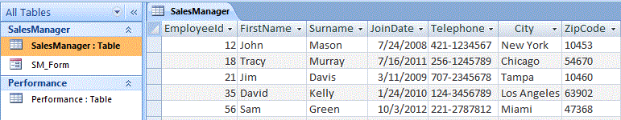
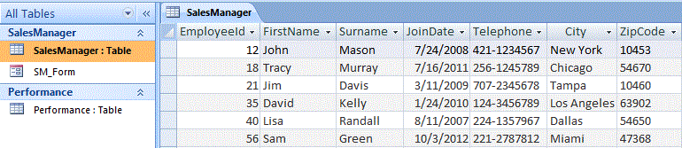
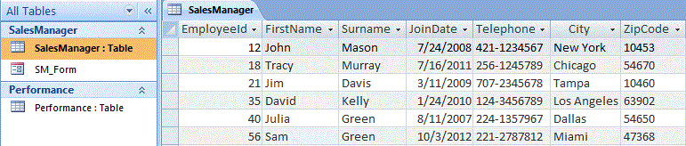

Image 1
Microsoft Access: ActiveX Data Objects Library (ADO)
Microsoft Access: ActiveX Data Objects (ADO), Connect with Access Databases from Excel using VBA.
Part 1 of 4
Microsoft Access: ActiveX Data Objects (ADO), Connect with Access Databases from Excel using VBA:
1. Microsoft Access: ActiveX Data Objects Library (ADO).
2. Microsoft Access: Use ADO to Execute SQL statements.
3. Import or Export Data from Access to Excel using ADO.
4. Microsoft Access: ActiveX Data Objects Extensions (ADOX).
----------------
Also Read:
To connect with other databases, when working in VBA, you can use either DAO (Data Access Objects), RDO (Remote Data Objects) or ADO (ActiveX Data Objects). After connecting to a database, you can manipulate its data. DAO, RDO and ADO are data access interfaces ie. they are object and programming models used to access data. Earlier, DAO was used to interface with local databases (viz. MS Access), RDO was used to interface with large databases such as Oracle and SQL Server. ADO was their replacement to interface with all types of data sources. Both DAO and ADO are commonly used while connecting to Microsoft Access Database.
-------------------------------------------------------------------------------------------------------------------------------
Contents:
Connect with Databases using DAO, RDO and ADO Objects
ADO Objects & Programming model
Connecting to a Data Source, viz. Microsoft Access, using the ADO Connection Open Method
Access records from a database table
-------------------------------------------------------------------------------------------------------------------------------
Connect with Databases using DAO, RDO and ADO Objects
To connect with other databases, when working in VBA, you can use either DAO (Data Access Objects), RDO (Remote Data Objects) or ADO (ActiveX Data Objects). After connecting to a database, you can manipulate its data.
DAO, RDO and ADO are data access interfaces ie. they are object and programming models used to access data. Earlier, DAO was used to interface with local databases (viz. MS Access), RDO was used to interface with large databases such as Oracle and SQL Server. ADO was their replacement to interface with all types of data sources. Both DAO and ADO are commonly used while connecting to Microsoft Access Database. DAO is native to Access, the DAO object library is the default reference in Access 2007 and the library will be existing when you use Access (ADO object library was the default reference in Access 2000 and 2002, whereas DAO returned as the default object library with Access 2003 after being the default in Access 97 earlier). DAO integrates well with Access databases and provides faster access. ADO provides access to a wider variety of data sources than DAO, besides Access. ADO has succeeded DAO and is the latest data access technology, is simpler and more flexible, and interfaces with Microsoft's powerful data access technology of OLE DB. In ADO the objects are less than in DAO, and it contains more properties, methods and events. ADO/OLE DB is recommended for new projects but it might not be worthwhile to convert DAO code to ADO for existing projects.
ADO creates a reference to the database using the Connection object, to connect to the data source. You use the Open and Close methods to open and close a Connection object. DAO creates a reference to the database using the database object, to connect to the data source.
In Microsoft Access, Recordset objects are used to access and manipulate data in a database. A Recordset object represents a set of records in a database table, or a set of records returned from running a query. Both DAO and ADO libraries have a Recordset object, though the methods, properties, and options of the respective object is different. A Record object is one row of data in a Recordset. A Recordset object has a Fields collection which contains all the Field objects, where each Field object represents a column in the Recordset. In other words, each record represents a row of data and contains many fields, and each field corresponds to a column in the database table.
In your VBA code, you should ideally precede the object name by its program ID (ProgID) prefix, which in ADO is "ADODB" and in DAO is "DAO". Many objects, for example the Recordset object, have similar names in both DAO and ADO and it is advisable to have explicit references in your project. This becomes a must if you have included references to both the DAO and ADO libraries in your VBA project, else the object library mentioned first in the References list will prevail, resulting in confusion in the vba code.
While instantiating the Recordset object, you should use:
Dim daoRecSet As DAO.Recordset
Dim adoRecSet As ADODB.Recordset
instead of:
Dim RecSet As Recordset
ADO Objects & Programming model
ADO stands for ActiveX Data Objects, and it enables an application (viz. Excel) to access and manipulate data from a database (viz. Access), interfacing with an OLE DB provider. ADO is used with many programming languages, including Microsoft Visual Basic, and an ADO version is installed with Microsoft Office.
OLE DB is a data access technology of Microsoft, providing access to a data source using a COM component. The COM component is a binary file (supporting the COM standard) which is the software that exposes data to an ADO application, and is called a data provider, also referred to as an OLE DB provider. COM (Component Object Model) is a binary-interface standard used to enable interaction between objects. A wide variety of data sources can be accessed with OLE DB providers.
A database engine is the underlying software component of a database used to manipulate its data. Jet (Joint Engine Technology) is used by Microsoft Access as its database engine. The Microsoft Jet 4.0 OLE DB Provider is used to work with the Jet database engine which opens and provides access to an Access database, hence the Provider property of the ADO Connection object should specify the Jet 4.0 OLE DB provider before opening the connection. ADO uses the Connection object to connect to the data source, to open an Access Database. For Access 2007 (.accdb database), you will need to change the Provider to "Microsoft.ACE.OLEDB.12.0", ACE (Access Connectivity Engine) being Jet's successor.
Image 1
To use ADO in your VBA project, you must add a reference to the ADO Object Library in Excel (your host application) by clicking Tools-References in VBE, and then choose an appropriate version (mostly, you should choose the highest version number) of Microsoft ActiveX Data Objects x.x Library from the list. The ADO version depends on your Windows operating system, viz. Microsoft ActiveX Data Objects 6.1 Library for Windows 7 or later, Microsoft ActiveX Data Objects 6.0 Library for Windows Vista, and Microsoft ActiveX Data Objects 2.8 Library for Windows XP. In Windows Vista or in later versions of Windows only one of the ADO version 6.0 or version 6.1 will be available in the Reference list at one time. Refer Image 1 for available libraries, wherein 'Microsoft ActiveX Data Objects 6.1 Library' has been selected.
ADOX: ADOX refers to ActiveX Data Objects Extensions for Data Definition Language and Security, and it is an extension to the ADO library in which additional objects, for creating and modifying database tables, and for security, are exposed. To use ADOX in your VBA project, you must add a reference to the ADOX Object Library in Excel (your host application) by clicking Tools-References in VBE, and then choose an appropriate version viz. Microsoft ADO Ext. x.x for DDL and Security. Note that ADO does not by itself support creating databases & tables, which is actually done with ADOX. However, you can create database tables in ADO using SQL.
ADOX is best used for creating and manipulating database structure and tables, though ADO can also be used for this in limited ways (usually with SQL DDL queries). ADO is best used to access your data and for data manipulation ie. to add / edit/ delete records.
Connecting to a Data Source, viz. Microsoft Access, using the ADO Connection Open Method
Use the Open Method (ADO Connection) to physically establish a connection to a data source. Syntax: ConnectionObject.Open ConnectionString, UserID, Password, Options. ConnectionString argument is a string value which contains information for connecting to a data source. All four arguments of the Open Method are optional, and it is common to only use the ConnectionString argument to establish a connection (specifying values for Provider and the Data Source in the ConnectionString).
The ConnectionString argument has a series of values which contain information for connecting to a data source. Each value statement is in the format of "keyword=value" and is separated by semicolons, within the quoted ConnectionString. The "Provider" keyword specifies the OLE DB provider name to be used for the connection; the "Data Source" keyword specifies the path and name of the database to which you are connecting. It may be noted that Keywords are not case sensitive, and spaces between "keyword=value" pairs are ignored.
Specify the provider name to be used for the connection, in the ConnectionString as, "Microsoft.Jet.OLEDB.4.0". For Access 2007 (.accdb database), you will need to change the Provider to "Microsoft.ACE.OLEDB.12.0". This driver, provided by Microsoft, was released with Office 2007 and can connect to data sources including Access 2007, Excel 2007 and Access / Excel 97-2003. Microsoft.Jet.OLEDB.4.0 is not available in 64 bit. Jet has been installed in and works with all windows 32-bit systems, and its successor ACE is available in both 32 bit and 64 bit versions and compatible with both the Access mdb & accdb files. To download the "Microsoft.ACE.OLEDB.12.0" driver, click http://www.microsoft.com/en-us/download/details.aspx?id=13255.
The ACE driver is supported by the operating systems: Windows 8; Windows 7; Windows Server 2003 R2 (32-Bit x86); Windows Server 2003 R2 x64 editions; Windows Server 2008 R2; Windows Server 2008 Service Pack 2; Windows Vista Service Pack 1; Windows XP Service Pack 3. Only the 32-bit Access Database Engine may be used on Windows XP Service Pack 3.
Use the Mode property of the Connection object to specify the mode for opening a database, before calling the open method, because this property can be set only on a closed Connection object.
The
default Mode property value for a Connection is adModeUnknown
indicating that the permissions have not yet been set or cannot be
determined. This is the default value used by the ADO connection object
when not specified by the user, however the ADO provider named in the
connection string will determine the access mode. The
Microsoft.Jet.OLEDB.4.0 and Microsoft.ACE.OLEDB.12.0 providers both, by
Default, open a database connection in shared-access mode ie.
adModeShareDenyNone.
To
open a database in shared-access mode where neither read nor write
access can be denied to others, set the value as adModeShareDenyNone. To
open a database in shared read-only mode, set the value as adModeRead,
and to prevent others from opening a connection set the value as
adModeShareExclusive. Other values are: Write-only (adModeWrite),
Read/Write (adModeReadWrite), Prevents others from opening in read mode
(adModeShareDenyRead), Prevents others from opening in write mode
(adModeShareDenyWrite), Prevents others from opening in read/write mode
(adModeShareDenyExclusive).
While using Jet/ACE database engine to access data in file formats other than MS Access database, viz. Excel, "Extended Properties" specifies a string containing connection information which is provider-specific, that cannot be specified through standard ADO properties.
When
to add the optional HDR= setting to the Extended Properties of the
connection string: if the first row contains column names and not data,
use the setting HDR=YES, which is also the default. Specifying HDR=No
will be a must if you do not have column headings.
The Extended Properties parameter should also refer to the appropriate Excel version.
The Connection Object
A two-line code to instantiate an ADO object
'declare variable as a specific object type:
Dim connDB As ADODB.Connection
'set
the object variable to create a new instance of the connection object -
a new object reference is created by using the New keyword:
Set connDB = New ADODB.Connection
A single-line code to instantiate an ADO object
'this uses Dim (to declare) with the New keyword (to instantiate):
Dim connDB As New ADODB.Connection
Instantiate an object using Late Binding - you need not add a reference to the ADO library in Excel (your host application)
'declare variable as Object type, which can be a reference to any object:
Dim connDB As Object
'set the object variable to create a new instance of the connection object, using the CreateObject method:
Set connDB = CreateObject("ADODB.Connection")
Establish Connection to a Data Source
Note: In the below examples, connDB is the connection object, instantiated as shown above.
1. With a single-line code you can establish a connection to a data source calling the Connection object's Open method and specifying connection values for the ConnectionString argument. Each value statement is separated by semicolons within the quoted ConnectionString, as shown below.
In a single-line, specify the Connection object arguments, with values for the ConnectionString argument.
(i) opening a connection with a Jet provider (pre - MS Access 2007 databases)
connDB.Open ConnectionString:="Provider=Microsoft.Jet.OLEDB.4.0; data source=C:\Users\Documents\SalesReport.accdb; User ID=john, Password=123"
(ii) connecting with MS Access 2007 databases (.accdb files):
---------------------
'connect to database with the Mode value adModeShareExclusive ie. prevent others from opening a connection:
connDB.Open ConnectionString:="Provider = Microsoft.ACE.OLEDB.12.0; data source=C:\Users\Documents\SalesReport.accdb; Mode =" & adModeShareExclusive
---------------------
Dim strMyPath As String, strDBName As String, strDB As String
'your data source with which to establish connection - MS Access Database Name:
strDBName = "SalesReport.accdb"
'get path / location of the database, presumed to be in the same location as the host workbook:
strMyPath = ThisWorkbook.Path
'set the string variable to the Database:
strDB = strMyPath & "\" & strDBName
'instantiate an ADO object:
Dim connDB As New ADODB.Connection
'connect to database:
connDB.Open ConnectionString:="Provider = Microsoft.ACE.OLEDB.12.0; data source=" & strDB
---------------------
'open a password protected file:
connDB.Open ConnectionString:="Provider = Microsoft.ACE.OLEDB.12.0; data source=C:\Users\Documents\SalesReport.accdb; Jet OLEDB:Database Password=123"
2. Another way to establish a connection to a data source is that before opening the Connection object you can set its ConnectionString property. The ConnectionString property contains information for connecting to a data source and is a series of value statements separated by semicolons. The ConnectionString property values are set before calling the Open method, as shown below.
Dim strMyPath As String, strDBName As String, strDB As String
'your data source with which to establish connection - MS Access Database Name:
strDBName = "SalesReport.accdb"
'get path / location of the database, presumed to be in the same location as the host workbook:
strMyPath = ThisWorkbook.Path
'set the string variable to the Database:
strDB = strMyPath & "\" & strDBName
'instantiate an ADO object
Dim connDB As New ADODB.Connection
'connect to database
With connDB
.Provider = "Microsoft.ACE.OLEDB.12.0"
.Mode = adModeShareDenyNone
.Open strDB
End With
To connect to Excel files:
Use the Office 2007 driver Microsoft.ACE.OLEDB.12.0 to connect to Excel 2007 (.xlsx) files:
connDB.Open "Provider=Microsoft.ACE.OLEDB.12.0; Data Source=C:\Users\Documents\SampleWB.xlsx;Extended Properties='Excel 12.0;HDR = YES'"
Use the Office 2007 driver Microsoft.ACE.OLEDB.12.0 to connect to older 97-2003 (.xls) Excel files:
connDB.Open "Provider=Microsoft.ACE.OLEDB.12.0; Data Source=C:\Users\Documents\SampleWB.xls;Extended Properties='Excel 8.0;HDR = YES'"
Access records from a database table
After connecting to a database, you can manipulate its data. In Microsoft Access, Recordset objects are used to access and manipulate data in a database. A Recordset object represents a set of records in a database table, or a set of records returned from running a query. Both DAO and ADO libraries have a Recordset object, though the methods, properties, and options of the respective object is different. A Record object is one row of data in a Recordset. A Recordset object has a Fields collection which contains all the Field objects, where each Field object represents a column in the Recordset. In other words, each record represents a row of data and contains many fields, and each field corresponds to a column in the database table.
The ADO Recordset Open Method, to open an ADO Recordset object
Use the Open Method (ADO Recordset) to access data / records from a table - it opens a cursor (ie. a pointer) to a record, or a range of records, within the Recordset. Syntax: recordset.Open Source, ActiveConnection, CursorType, LockType, Options. All arguments are optional. On opening a Recordset, the first record is the current record.
Source argument refers to the source of the record(s), and Source often mentions an SQL statement, or it mentions a table name containing a recordset, while using the ADO Recordset Open Method. Source can also be a valid Command object, a stored procedure call, a URL or a file name. ActiveConnection is a valid connection object variable (or a string of ConnectionString values) specifying the connection in which to open the Recordset object.
The default CursorType used by the provider when opening the Recordset, is adOpenForwardOnly which allows only forward movement. Cursor type adOpenStatic allows all movement (forward or backward) through records and changes being made by other users who are working on the Recordset are not visible or shown, so that all records appear the same way since the Recordset was opened. Cursor type adOpenDynamic also allows all movement (forward or backward) through records and changes being made by other users are visible or shown. Cursor type adOpenKeyset is similar to adOpenDynamic, it allows all movement (forward or backward) through records and data changes made by other users are visible, however, any new records added or records deleted by other users are not visible. Cursor type adOpenUnspecified does not specify a cursor.
LockType mentions the type of lock to be placed when records are being edited. Optimistic locking (adLockOptimistic) locks records only when you are updating a record (ie. when the Update Method is called), and the same record can be read and edited by other users while it is open. Pessimistic locking (adLockPessimistic) locks a record as soon as you start editing, and the same record cannot be read or edited by other users until you either save or cancel changes by using the Update or CancelUpdate methods respectively. Optimistic batch updates (adLockBatchOptimistic) LockType is used for making multiple changes (ie. changes to multiple records at the same time) and then writing them to the data source only when the UpdateBatch method is called, and till then any Recordset changes that were made will not be updated. Default type is adLockReadOnly ie. read only records, wherein data cannot be edited.
Options is a Long value used to determine how the Source argument is to be evaluated, provided it is not a Command object. Though this is an optional argument, it is used to evaluate the Source argument optimally, viz. if you are aware of the Source type (say, it is a table name), then using the adCmdTable value for this argument will make ADO directly evaluate Source as a table name whose columns are all returned by an SQL query. Other values are: adCmdUnspecified - does not specify how to evaluate; adCmdText - evaluates Source as a textual definition of a command or stored procedure call; adCmdStoredProc - evaluates Source as a stored procedure name; adCmdUnknown (default) - type of command in the Source argument is not known; adCmdFile - evaluates Source as the file name of a persistently stored Recordset; adCmdTableDirect - evaluates Source as a table name whose columns are all returned. You will encounter an error if there is a mis-match between the Options argument and the Source type.
Create a new record using the Recordset Object's AddNew method
Create a new record in a table, using the AddNew method (of the Recordset object). Syntax: RecordsetObject.AddNew FieldList, Values. Both arguments are optional. FieldList is the Field Name or ordinal position of the field, and it can be a single name or an array of names. If FieldList is an array of names, then Values should also be an array of values for the fields, of the same number and in the same order of field names.
Update Method (ADO Recordset)
After creating a new record using the AddNew method or after changing a field value of a record, you must use the Update method (of Recordset object) to save changes to the current record. After using the Update method, the current record will remain the current one.
Close method
You should close a Connection, a Record or a Recordset, by using the Close method, which will free any associated system resources. Active Recordset objects associated with the connection also get closed when you close a Connection object. Closing an object is not enough to remove it from memory, for which you need to set the object variable to Nothing, after closing the object.
To close a Recordset: RecordsetObject.Close
To close a Connection: ConnectionObject.Close
To destroy the Recordset variable: Set RecordsetObject = Nothing
To destroy the Connection variable: Set ConnectionObject = Nothing
Delete Method (ADO Recordset)
Use the ADO Recordset Delete Method, to delete the current record or a group of records. Syntax: RecordsetObject.Delete AffectRecords. The AffectRecords argument determines how many records will the delete method affect, with the default value being adAffectCurrent which affects the current record only. The deleted record remains the current record even after being deleted, and you can use the Move method to move to a different record.
Moving between Records in a Recordset
Move Method (ADO). Syntax: RecordsetObject.Move NumRecords, Start. This method moves the position of the current record as per the specified number of records (NumRecords argument) from a starting location (Start argument value adBookmarkCurrent indicates current record, adBookmarkFirst indicates first record and adBookmarkLast indicates the last record - defalut value of this optional argument is adBookmarkCurrent). It is necessary to specify the NumRecords argument, and if this is more than 0 the current record moves forward towards end of recordset, and if less than 0 then the current record moves backwards.
MoveFirst, MoveLast, MoveNext, and MovePrevious Methods (ADO): MoveFirst method moves the current record to the first record. Using the MoveLast method moves the current record to the last record in the set of records. MoveNext method moves the current record one position forward and MovePrevious moves the current record one position backward. Syntax: RecordsetObject.MoveFirst, RecordsetObject.MoveLast, RecordsetObject.MoveNext, RecordsetObject.MovePrevious.
EOF Property (ADO) indicates whether the current record position is after the last record in the set of records, wherein its value will be TRUE. BOF Property (ADO) indicates whether the current record position is before the first record in the set of records, wherein its value will be TRUE. Both properties return a Boolean value and are used to determine if the current record is outside the limits of the Recordset object. There will be no current record if either the EOF Property or BOF Property is True, and if both properties are True on opening a recordset it will indicate that there are no records. Opening a Recordset having atleast one record makes the first record as the current record and in this case both the EOF Property and BOF Property will be False. Syntax: RecordsetObject .EOF, RecordsetObject .BOF.
Count the number of Records in a Recordset
Use the RecordCount Property (ADO) to Count the number of Records in a Recordset. The RecordCount Property will return -1 if the number of records cannot be determined or if RecordCount is not supported by the provider or cursor type. CursorType adOpenForwardOnly does not support RecordCount, you can use adOpenStatic or adOpenKeyset. CursorType adOpenDynamic might return -1 or return the actual count, depending on the data source. The Execute method of a connection object opens a recordset with CursorType adOpenForwardOnly which does not support RecordCount, hence use the recordset Open method, which can use all CursorTypes.
Example of using the RecordCount property:
MsgBox RecordsetObject.RecordCount
Count the number of Fields
The Count property (adoRecSet.Fields.count) determines the number of fields in a collection (Recordset), wherein numbering for members of a collection begins with zero. If you have seven fields in a table, using RecordsetObject.Fields.count will return 7, and RecordsetObject.Fields(0) will return the value of the first field.
Access Fields by Item property viz. recordset.Fields.Item(index)
You can access fields by the Item property which refers to the field name or its position, viz. recordset.Fields.Item(index), where index is the Field Name or its ordinal position. Note that the Item property is the default property of the fields collection, so omitting the Item keyword will have no effect.
Recordset.Fields(0).Name returns the Field name of the first field, and Recordset.Fields(0).Value returns the content of the first field. The Value property of the Field object is the Default property viz Recordset.Fields(0) is the same as Recordset.Fields(0).Value and will return the first fields's value.
Examples: To reference a field named "FirstName", which is the second field in the table, you can use any of the following:-
RecordsetObject.Fields("FirstName")
RecordsetObject.Fields.Item("FirstName")
RecordsetObject.Fields(1)
RecordsetObject.Fields.Item(1)
RecordsetObject![firstName]
Type property sets or returns the Data Type of a Field
Use the Type property to set or return the data type of a Field.
Examples of data type enumerated constants that are supported by ADO, for the Type property, include:
adBoolean (Boolean Value - Yes/No); adChar (String Value); adCurrency (Currency Value); adDate (date value - number of days since December 30, 1899 + the fraction of a day); adDBDate (date value - yyyymmdd); adDecimal (an exact numeric value with a fixed precision and scale); adDouble (a double-precision floating-point value); adGUID (FieldSize = Replication ID); adInteger (a four-byte signed integer); adLongVarChar (Long String Value); adNumeric (an exact numeric value with a fixed precision and scale); adSingle (a single-precision floating-point value); adVarWChar (a null-terminated Unicode character string); ...
Default data type of a column is a value of 202 (adVarWChar). Data Types of adGUID and adInteger can be used for AutoNumber also.
Return the data type of a Field using the follwing code:
MsgBox RecordsetObject.Fields("FirstName").Type
Example 1: Use ADO to Connect to Access Database, Open Recordset, and Manipulate Records.
Refer to Images 2a, 2b & 2c as mentioned in the code.
Image 2a
Image 2b
Image 2c
Sub adoAutomateAccess_1()
'In this example we show how to:
'1. Connect to the data source: ADO uses the Connection object to open an Access Database.
'2. Open a Recordset (set of records in a table) using the ADO Recordset Open Method.
'3. Reference all records in each field of a Recordset.
'4. Moving between Records in a Recordset, using MoveNext ...
'5. Create a new record in a table, using the AddNew method.
'6. Edit an ADO record.
'7. Access / Reference fields in a Recordset.
'8. Delete the new ADO record.
'9. Close Recordset and destroy object variable.
'To
use ADO in your VBA project, you must add a reference to the ADO Object
Library in Excel (your host application) by clicking Tools-References
in VBE, and then choose an appropriate version of Microsoft ActiveX Data
Objects x.x Library from the list.
'--------------
'DIM STATEMENTS
Dim strMyPath As String, strDBName As String, strDB As String
Dim adoRecSet As ADODB.Recordset
Dim i As Long
'--------------
'THE CONNECTION OBJECT - ESTABLISH CONNECTION TO A DATA SOURCE
'your data source with which to establish connection - ENTER the MS Access Database Name:
strDBName = "SalesReport.accdb"
'get path / location of the database, presumed to be in the same location as the host workbook:
strMyPath = ThisWorkbook.Path
'set the string variable to the Database:
strDB = strMyPath & "\" & strDBName
'instantiate an ADO object:
Dim connDB As New ADODB.Connection
'connect to database with the Mode value adModeShareExclusive ie. prevent others from opening a connection:
'For
pre - MS Access 2007, .mdb files (viz. MS Access 97 up to MS Access
2003), use the Jet provider: "Microsoft.Jet.OLEDB.4.0". For Access 2007
(.accdb database) use the ACE Provider: "Microsoft.ACE.OLEDB.12.0". The
ACE Provider can be used for both the Access .mdb & .accdb files.
connDB.Open ConnectionString:="Provider = Microsoft.ACE.OLEDB.12.0; data source=C:\Users\Documents\SalesReport.accdb; Mode =" & adModeShareExclusive
'--------------
'OPEN RECORDSET, ACCESS RECORDS AND FIELDS
'Note
that a Recordset object represents a set of records, but at any time
only a single record within the set of records is referred by a
Recordset object as the current record.
'Use
the Open Method (ADO Recordset) to access data from a table - it opens a
cursor (ie. a pointer) to a record, or a range of records, within the
Recordset. On opening a Recordset, the first record is the current
record.
'Set the ADO Recordset object:
Set adoRecSet = New ADODB.Recordset
'Opening the table named SalesManager:
strTable = "SalesManager"
adoRecSet.Open Source:=strTable, ActiveConnection:=connDB, CursorType:=adOpenStatic, LockType:=adLockOptimistic
'refer Image 2a to view the existing SalesManager Table in MS Access file "SalesReport.accdb".
'reference all records in each field of a Recordset:
For i = 0 To adoRecSet.Fields.count - 1
'get field / column name:
MsgBox adoRecSet.Fields(i).Name
adoRecSet.MoveFirst
Do While Not adoRecSet.EOF
'get record value:
MsgBox adoRecSet.Fields(i).Value
adoRecSet.MoveNext
Loop
Next i
'refer Image 2b to view the SalesManager Table after adding the new record.
'Create a new record in a table, using the AddNew method (of the Recordset object).
'NOTE: values of a primary field will need to be unique and cannot be Null.
With adoRecSet
.AddNew
.Fields("EmployeeId") = 40
.Fields("FirstName") = "Lisa"
.Fields("SurName") = "Randall"
.Fields("JoinDate") = "08/11/2007"
.Fields("Telephone") = "224-1357967"
.Fields("City") = "Dallas"
.Fields("ZipCode") = "54650"
'will save only after Update method is run:
'In
DAO, after the Update the current record will be the record which had
focus before the AddNew method, whereas in ADO, after calling Update the
current record will be the new one.
.Update
End With
'To return a field named "FirstName", which is the second field in the table, you can use any of the following:-
MsgBox adoRecSet.Fields("FirstName")
'MsgBox adoRecSet.Fields.Item("FirstName")
'MsgBox adoRecSet.Fields(1)
'MsgBox adoRecSet.Fields.Item(1)
'MsgBox adoRecSet![firstName]
'count number of fields - returns 7 fields:
MsgBox adoRecSet.Fields.count
'count number of records in the Recordset - returns 6, a new record is added to the original 5 records:
MsgBox adoRecSet.RecordCount
'Use the Type property to return the data type of a Field.
MsgBox adoRecSet.Fields("FirstName").Type
'refer Image 2c to view the SalesManager Table after editing the new record.
'edit the new record - an ADO recordset is already in edit mode (the Edit method is used only for DAO recordset):
With adoRecSet
.Fields("FirstName") = "Julia"
.Fields("SurName") = "Green"
'will save only after Update method is run:
.Update
End With
'Delete the new record:
adoRecSet.Delete
'--------------
'CLOSE RECORDSET, DESTROY OBJECT VARIABLES
'close the objects
adoRecSet.Close
connDB.Close
'destroy the object variables
Set adoRecSet = Nothing
Set connDB = Nothing
End Sub